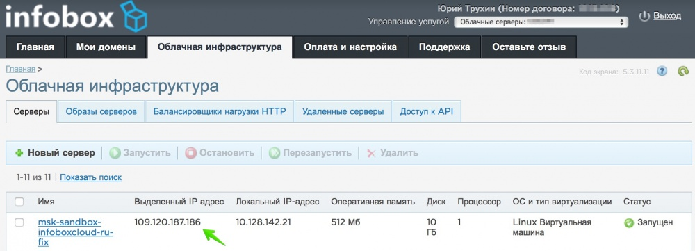
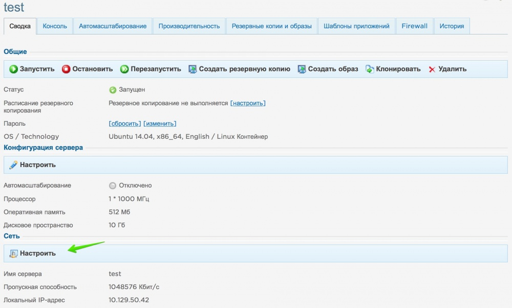
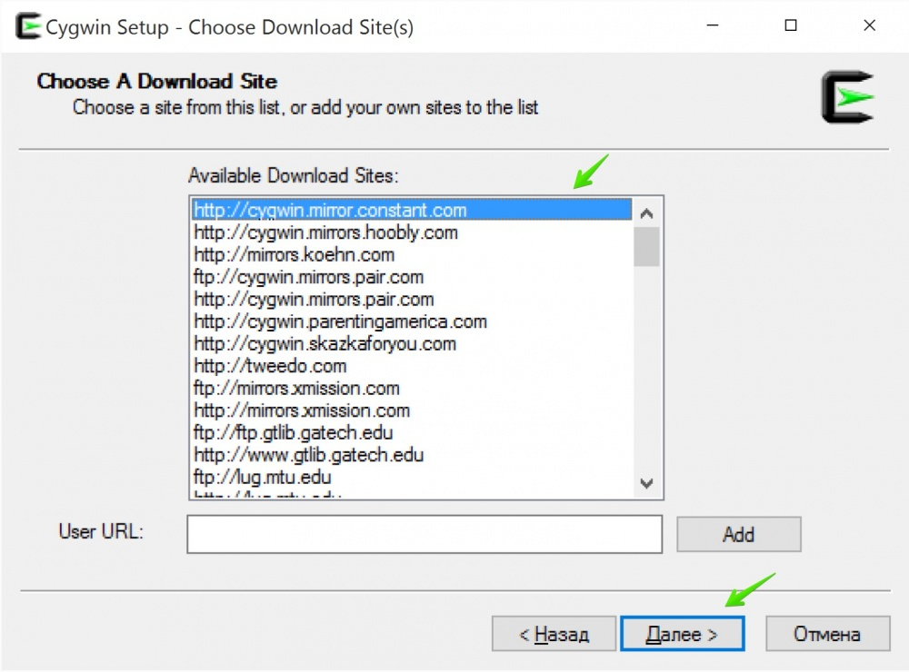
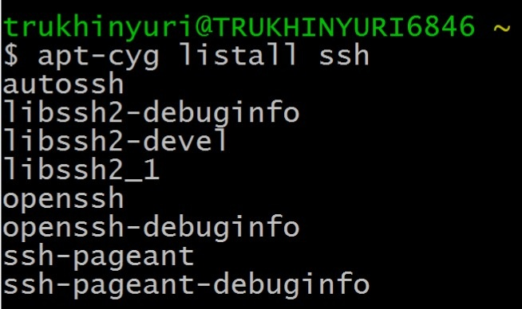
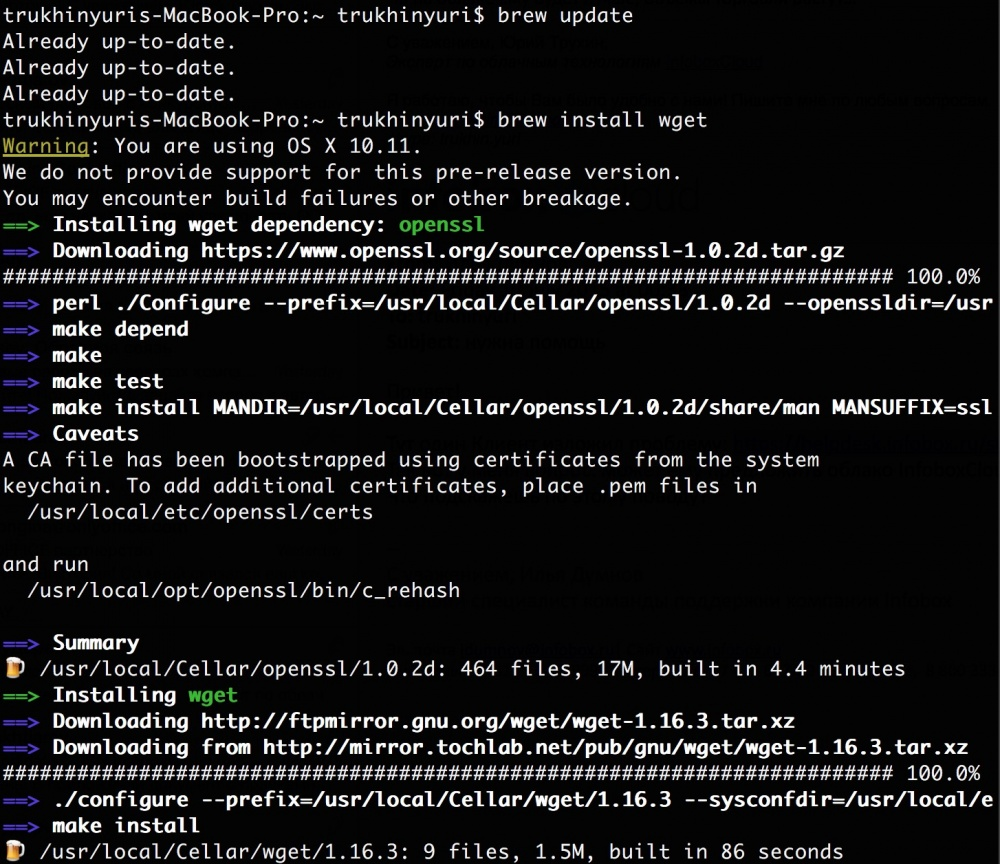
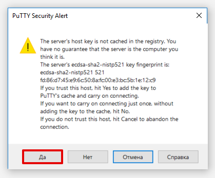

SSH_сайт
Как подключиться к серверу по SSH?
С помощью защищенного протокола SSH администраторы подключаются к своим серверам для безопасной работы. Рассмотрим особенности этого протокола подробнее:
SSH-протокол (от англ. Secure Shell) — криптографический сетевой протокол, предназначенный для удаленного доступа к операционной системе и осуществления безопасного удаленного управления в рамках незащищенной сети (например, через интернет).
SSH обеспечивает защищенный канал связи между клиентом и сервером, через который можно передавать данные (почтовые, видео, файлы), работать в командной строке, удаленно запускать программы, в том числе графические. SSH-сервер должен быть установлен на удаленной операционной системе. SSH-клиент должен быть запущен на машине, с которой будет осуществляться удаленное подключение.
Основные функции, доступные при использовании SSH-протокола:
Безопасность SSH-соединения обеспечивается:
Аутентификация сервера дает защиту от:
На сегодняшний день существуют две версии протокола SSH (SSH-1 и SSH-2), причем вторая версия усовершенствована и расширена по сравнению с первой. Например, вторая версия устойчива к атакам вида MITM («человек посередине», атака посредника). Также существуют две редакции данного протокола: открытая версия (бесплатная) и коммерческая (платная). Бесплатная версия — OpenSSH — встроена во все UNIX-подобные операционные системы в виде стандартных утилит SSH-клиента и SSH-сервера.
Коммерческая реализация SSH-протокола — SSH Communications Security — разработана одноименной организацией. Имеет небольшие отличия от бесплатной версии, такие как доступность коммерческой технической поддержки, наличие инструментов веб-управления и др. Основной набор команд и возможностей практически одинаковый у обоих продуктов.
Для ОС Windows выпущены различные SSH-клиенты и оболочки, самые распространенные из них — это бесплатные PuTTY и WinSCP. Для других операционных систем также существуют свои SSH-клиенты.Передача данных по SSH-протоколу через небезопасную сеть
SFTP-протокол (от англ. SSH File Transfer Protocol) – сетевой протокол прикладного уровня, предназначенный для передачи файлов и других действий с ними через имеющееся надежное соединение. Протокол был разработан как расширение SSH-2, предназначенное для операций с файлами по защищенному каналу, однако может работать и с другими протоколами, обеспечивающими безопасное соединение сервера с клиентом. Иными словами, для надежной работы через SFTP-протокол необходимо иметь установленное защищенное соединение (например, SSH), которое проводит аутентификацию клиента и сервера и устанавливает факт их надежности, поскольку сам SFTP-протокол не проводит аутентификацию и не обеспечивает безопасность.
SFTP имеет ряд преимуществ перед своими предшественниками — FTP и SCP — таких, как прерывание передачи файла, удаление, возобновление передачи, связь переданных файлов с основными атрибутами, например, меткой даты/времени, а также более высокая платформонезависимость.
SFTP-протокол реализуется через SFTP-сервер и SFTP-клиент, которые являются подсистемами OpenSSH.
Для чего используются SSH и SFTP протоколы
Чаще всего протоколы SSH и SFTP используются для удаленной работы с операционной системой или переноса большого количества файлов.
Например, клиент берет в аренду сервер или какую-то часть серверного пространства. Возникает необходимость переносить туда уже имеющиеся данные клиента, например, сайт или почтовые файлы. Провайдер должен обеспечить надежность и быстроту обмена данными с его сервером, особенно если речь идет о больших объемах информации и ее высокой конфиденциальности. В этом случае на удаленной машине (в данном случае — виртуальном сервере) устанавливается SSH-сервер (со встроенным SFTP-протоколом), а на клиентском компьютере — SSH-клиент. Создается SSH-туннель, и обмен данными между клиентом и удаленным сервером осуществляется через надежное соединение со всеми преимуществами протокола, описанными выше.
Также SSH может использоваться для удаленной работы по защищенному соединению с различными сервисами провайдера, такими как программное обеспечение, операционные системы и т.д.
По протоколу SSH работает набор программ, служащих для выполнения различных действий на удаленной операционной системе. Например, программа sshd обеспечивает серверную функциональность SSH, она должна быть запущена на SSH-сервере. Программа ssh запускается на SSH-клиенте и позволяет устанавливать соединение с удаленным хостом, регистрироваться на нем, работать с удаленной машиной через SSH-соединение.
Для запуска тех или иных программ SSH-протокола существуют специальные команды с набором различных опций. Эти команды могут отличаться в зависимости от используемой клиентской операционной системы и оболочки SSH-клиента. Команды запускаются либо из командной строки, если речь идет о UNIX-подобных системах, либо посредством графического интерфейса в соответствующих SSH-оболочках.
Если на вашем компьютере установлена ОС Windows, а на удаленной машине UNIX-подобная система (например, Linux), то для установки SSH-соединения можно использовать PuTTY. Это бесплатная программа под Windows состоит из одного запускаемого файла и не требует инсталляции.
Чтобы установить соединение при помощи PuTTY, необходимо проделать следующие действия.
Запустить PuTTY (putty.exe).
По умолчанию никаких дополнительных настроек проводить не нужно, можно убедиться, что указан 22-й порт и тип соединения Connection type — SSH. В поле Host Name (or IP address) нужно ввести имя удаленного компьютера или его IP-адрес и нажать кнопку Open.
Может появиться предупреждение системы безопасности PuTTY, однако если есть уверенность в том, что хост достоверен, то нужно нажать Да и продолжить соединение.
В появившейся командной строке нужно ввести имя пользователя, под которым будет выполняться вход на удаленный компьютер.
В следующей строке нужно ввести пароль для данного пользователя. При вводе пароля никакие символы в командной строке не отображаются, поэтому необходимо просто набрать пароль и нажать клавишу ввода (Enter). Если введены неправильные имя пользователя и пароль, то выведется ошибка «Access denied», в случае успешного подключения предоставляется командная строка удаленного компьютера.
Какую операционную систему выбрать?
Поддержка и администрирование сервера
Как создать ключ для авторизации по SSH и добавить его на сервер?
Зачем поддержке ключ авторизации по SSH на вашем VDS
Как подключиться к серверу по RDP?
Подтверждение легальности рассылок
Как не пропустить письмо от FirstVDS
==============================================================================================
Как правильно подключиться к серверу по SSH. Руководство
В этой статье мы рассмотрим современные и удобные способы работы с сервером по SSH с VPS от Infobox и облаком InfoboxCloud.
Мы расскажем не только про обычный способ подключения, но и про организацию устойчивого соединения через нестабильный интернет (например 3G модемы), а также о дополнительных утилитах, помогающих в работе по SSH.
Если вы пользователь Windows и вам нужно просто и быстро подключиться к Linux–серверу — переходите в раздел «Putty или как быстро подключиться к SSH из Windows».
Что необходимо знать для подключения по SSH
Для подключение необходимы:
Где взять данные для подключения к серверу VPS NG от Infobox
После заказа услуги войдите в панель управления https://panel.infobox.ru.
Выберите услугу «VPS NG» в правом верхнем углу панели управления в выпадающем списке.
Затем перейдите во вкладку «VPS».
В этом разделе вы увидите ip-адрес сервера и можете установить пароль для доступа к серверу.
Для подключения используйте имя пользователя root, ip–адрес с этой страницы и установленный пароль.
Если вы забыли пароль, нажмите на пункт «Редактировать параметры доступа», показанном на скриншоте выше.
Где взять данные для подключения к серверу VPS от Infobox
Войдите в панель управления https://panel.infobox.ru.
Выберите услугу VPS в правом верхнем углу панели управления в выпадающем списке (в названии услуга содержит имя заказанной ОС и регион размещения).
Затем перейдите во вкладку «Управление VPS».
Используйте имя пользователя root, пароль и ip–адрес сервера с этой страницы.
Где взять данные для подключения к серверу InfoboxCloud
После создания сервера данные для подключения придут к вам на электронную почту. Этого достаточно для подключения.
Если вы потеряли письмо с данными для доступа и хотите получить доступ к серверу
По-умолчанию логин администратора сервера: root
Войдите в панель управления по адресу: https://panel.infobox.ru.
Выберите услугу «Облачные серверы» в правом верхнем углу панели управления в выпадающем списке.
Выделенный IP–адрес для сервера можно посмотреть во вкладке «Облачная инфраструктура» панели управления.

Если поле "Выделенный IP адрес" пустое, значит при создании сервера вы не добавили серверу хотя бы 1 выделенный ip–адрес (и следовательно доступа через Интернет к серверу нет, есть только из локальной сети).
Чтобы добавить выделенный IP–адрес, нажмите на имя сервера.
В группе настроек «Сеть» нажмите «Настроить».

Убедитесь, что пропускная способность (скорость) сети достаточна (или поставьте больше при необходимости).
Затем нажмите «Добавить IPv4–адрес» и нажмите «Сохранить изменения».
Теперь у сервера есть выделенный IP–адрес.
Для изменения пароля доступа к серверу нажмите «Изменить», как показано на скриншоте выше. Так вы можете установить пароль для доступа к серверу.
Теперь вы знаете ip–адрес сервера, логин (root) и пароль.
Настройка SSH–клиентов
Для Windows
Для подключения к серверу вам потребуется SSH–клиент. Если необходимо быстро подключиться — рекомендуется Putty. Если требуется работа с unix–утилитами, такими как scp, rsync и ssh-copy-id – используйте Cygwin.
Putty или как быстро подключиться к SSH из Windows
Скачайте инсталлятор Putty для Windows из раздела The latest release version и установите Putty с настройками по-умолчанию.
Запустите Putty (Пуск -> Все приложения -> PuTTY -> PuTTY).
Введите IP–адрес сервера. Убедитесь, что выбран порт 22, а тип подключения SSH и нажмите «Open».
Вам будет задан вопрос, доверяете ли вы серверу, к которому подключаетесь. Нужно ответить «Да».
Откроется окно подключения. В качестве логина используйте root, в качестве пароля — ваш пароль от сервера. Пароль можно вставить из буфера обмена правой кнопкой мыши. Он не отображается при вводе и вставке в целях безопасности.
Подключение было успешно установлено.
Cygwin или Unix–окружение на вашем Windows компьютере
Работая с Linux–серверами вам может понадобиться подобное окружение на вашем компьютере. Использовать единый набор утилит на сервере и рабочем компьютере очень удобно, поэтому обязательно попробуйте Cygwin. Linux только с первого взгляда кажется сложным. Постепенно осваивая эту ОС вы все больше будете нуждаться в Cygwin. Хорошее затягивает.
Загрузите файл-установки Cygwin и запустите установку.
При установке дойдите до этапа выбора источника установки и выберите любое зеркало, откуда будут скачиваться компоненты Cygwin и нажмите «Далее».

Будет предложен выбор пакетов, которые необходимо установить. Ничего не изменяйте на этом шаге и завершите процесс установки, просто нажимая «Далее».
После установки запустите Cygwin (Пуск -> Все приложения -> Cygwin -> Cygwin64 Terminal).
Теперь нужно установить менеджер пакетов, чтобы устанавливать необходимое ПО способом, похожим на то, как это делается в Linux. Для этого выполните следующие команды:
lynx -source rawgit.com/transcode-open/apt-cyg/master/apt-cyg > apt-cyg
install apt-cyg /bin
Работаем с пакетным менеджером apt-cyg в Windows
Теперь давайте познакомимся с командами apt-cyg:
Давайте установим OpenSSH. Для этого сначала скачаем файл с данными о доступных пакетах (и обновим имеющиеся):
apt-cyg update
Как мы видим, для полноценной работы apt-cyg не хватает wget. Установите его:
apt-cyg install wget
Теперь давайте найдем пакет, в котором есть ssh.
apt-cyg listall ssh

Очень похоже, что пакет называется openssh :) Давайте установим его.
apt-cyg install openssh
Теперь подключитесь к SSH так же, как это происходит на Unix–системах. Введите:
ssh root@ip–адрес-сервера
, где root – имя пользователя, а вместо ip-адрес-сервера введите IP–адрес.
Мы успешно подключились по ssh так же, как и в Unix.
(кстати, Microsoft ведет работу над поддержкой OpenSSH клиента и сервера в Windows из коробки).
Для OS X и Linux
Подключение по ssh из Linux и OS X — одно удовольствие. OpenSSH встроен в эти ОС.
Откройте терминал (Finder -> Applications -> Utilites -> Terminal, если вы в Linux – вы знаете, где у вас терминал :))
Для подключения введите:
ssh root@ip–адрес-сервера
, где root – имя пользователя, а вместо ip-адрес-сервера введите IP–адрес.
Подключение к серверу успешно установлено.
Теперь давайте разберемся, как устанавливать дополнительное ПО, которое нам потребуется ниже в статье.
Для установки дополнительного ПО в Linux уже есть пакетные менеджеры.
В OS X следует установить пакетный менеджер Homebrew.
Для установки выполните команду:
ruby -e "$(curl -fsSL https://raw.githubusercontent.com/Homebrew/install/master/install)"
В процессе ОС предложит установить компоненты XCode, это нужно сделать.
Работаем с пакетным менеджером OS X: Homebrew
Через homebrew программы распространяются в исходных текстах и собираются на компьютере пользователя с помощью XCode. Таким образом в homebrew нет пакетов, а наборы исходных текстов называются формулами.
Давайте познакомимся с командами brew:
Например, давайте установим wget с помощью homebrew:
brew update
brew install wget

Работе с пакетными менеджерами Linux будет посвящена отдельная статья. Если вы используете Linux на рабочей станции — наверняка знаете, как установить пaкет в эту ОС.
Подключаемся к серверу Linux по ключу
Вводить пароль при каждом соединении с сервером с доверенного компьютера не удобно. Давайте рассмотрим, как входить на сервер по ключу.
Ключ состоит из открытой и закрытой части. Открытая часть сохраняется в файл authorized_keys папки .ssh в домашнем каталоге пользователя на удаленном сервере. Закрытая остается на компьютере пользователя и ни в коем случае никуда не передается. Во время авторизации клиент подтверждает серверу владение ключом, но не передает сам ключ. Таким образом, взломав сервер нельзя украсть ключ пользователя.
Начните процесс генерации ключа на клиентском компьютере, с которого осуществляется подключение. Сгенерировать ключ на Windows с Cygwin, на OS X и на Linux можно командой
ssh-keygen
Будет задан вопрос, в какой файл сохранить закрытый ключ (по-умолчанию будет предложен id_rsa, просто нажмите enter).
Затем вас попросят ввести пароль. На этом шаге не вводите пароль, иначе при каждом соединении по SSH придется вводить пароль от ключа. Просто нажмите Enter.
Сохраните пароль в надежном месте — восстановить его невозможно.
Изменить, снять или установить пароль на ключ при необходимости можно командой ssh-keygen -p. Это может понадобиться, если ваши скрипты будут использовать подключение по ssh и естественно скрипты пароля ввести не могут.
После этого в папке вашего пользователя появится директория .ssh и в ней файлы id_rsa и id_rsa.pub. 
Теперь подключитесь к удаленному серверу и введите команду перехода в домашнюю директорию:
cd ~
Убедитесь, что на сервере нет папки .ssh (если есть — следующий шаг можно пропустить).
ls -la
Сгенерируйте ssh–ключ сервера командой ssh-keygen так же, как мы сделали это на предыдущем шаге.
Теперь в директории пользователя появилась папка .ssh.
Нужно в файл ~/.ssh/authorized_keys добавить содержимое id_rsa.pub из директории .ssh на вашем компьютере.
Выйдите из удаленного сервера командой
exit
Теперь выполните команду:
cat ~/.ssh/id_rsa.pub
Будет выведен публичный ключ. Скопируйте его в буфер обмена.
Подключитесь снова к серверу и создайте файл:
touch ~/.ssh/authorized_keys
Откройте файл authorized_keys на редактирование.
Если у вас еще нет редактора, вы можете воспользоваться редактором nano. Установите его с помощью пакетного менеджера ОС.
Для Ubuntu и Debian команда установки:
apt-key update && apt-get update && apt-get -y install nano
Для CentOS и Fedora:
yum -y install nano
Теперь введите:
nano ~/.ssh/authorized_keys
Вставьте публичный ключ из буфера обмена (из контекстного меню правого клика мыши).
Сохраните изменения командой ctl+X, Y, Enter.
Теперь выйдите из удаленного сервера командой
exit
Переподключитесь по SSH. Пароль запрошен не будет.
Как быстрее копировать публичный ключ на удаленные сервера
Конечно, для каждого сервера добавлять публичный ключ в authorized_keys – не очень быстрое занятие. Как это делается — знать надо, но теперь можно использовать утилиту ssh-copy-id для этого.
Убедитесь, что ранее вы сгенерировали ключ через ssh-keygen. В папке пользователя должна быть папка .ssh, а в ней файлы id_rsa и id_rsa.pub. Чтобы убедиться, что эти файлы присутствуют, выполните команду:
ls -la ~/.ssh/
Установитe ssh-copy-id на клиентский компьютер. В Cygwin Windows и Linux мы уже установили эту утилиту в пакете openssh и дополнительных действий не требуется. В OS X homebrew выполните команду:
brew install ssh-copy-id
Теперь для того, чтобы скопировать публичный ключ на удаленный сервер, выполните команду:
ssh-copy-id root@ip_адрес_сервера
Публичный ключ будет скопирован и вы сможете входить в сервер без пароля.
Что делать, если при соединении по SSH происходит ошибка REMOTE HOST IDENTIFICATION HAS CHANGED!
Выполните команду:
ssh-keygen -R hostname
, где в качестве hostname укажите домен или ip-адрес сервера, к которому подключаетесь. В файле ~/.ssh/know_hosts обновится информация о хосте и подключение по SSH произойдет успешно.
Как скопировать файлы по SSH на сервер и обратно (или между серверами)
Нестабильное интернет-соединение при подключении по SSH – что делать?
Часто, работая через нестабильную сеть (например через мобильный интернет 3G/4G или различные точки доступа WiFi) соединение с SSH обрывается. Давайте посмотрим, что можно сделать на уровне клиента, чтобы предотвратить необходимость переподключения. Данные инструменты не подходят для выполнения критически важных операций на сервере (например апгрейд ОС). Для выполнения критически важных операций нужно дополнительно использовать утилиты, описанные в следующем разделе статьи. Предназначение утилит в этом разделе — более удобная работа по SSH для пользователя.
AutoSSH
AutoSSH запускает копию ssh–клиента и осуществляет мониторинг за соединением, перезапуская ssh–клиент при необходимости.
Autossh использует ssh для построения петли ssh–перенаправлений (соединение с локального компьютера на удаленный и в обратном направлении) и пересылает тестовые данные, ожидая, что они вернутся назад. Также поддерживается использование удаленного эхо-сервиса для отправки назад тестовых данных.
AutoSSH поддерживает только 3 параметра:
Все остальные аргументы передаются как параметры ssh.
Для того, чтобы при восстановления соединения вам не пришлось вводить пароль повторно, разрешите для данного пользователя вход на сервер по ключу, как показано в разделе выше.
Установка AutoSSH в Cygwin в Windows
При использовании Cygwin в Windows введите:
apt-cyg update
apt-cyg install autossh
Теперь можно выполнить подключение к серверу:
autossh -M 20000 root@ip_адрес_сервера
Соединение успешно установлено.
В целом autossh – достаточно удобный инструмент для работы через нестабильные интернет-соединения и для организации ssh–туннелей на сервере (этот сценарий мы рассмотрим в отдельной статье). Недостаток autossh в том, что эта утилита не решает проблему, если в момент ввода команд на сети возникают значительные задержки (что в 3G сети случается). В этом случае вы будете ждать ответа от сервера на ввод каждого символа, что несколько замедляет работу. Тем не менее в обычных условиях работы autossh очень помогает поддерживать ssh–соединение.
Возможность вводить команды не дожидаясь ответа сервера решает Mosh, но совместимость этой утилиты пока сильно ограничена, а надежность невысока, поэтому пока использовать ее не рекомендуется.
Как выполнять критически важные и длительные операции на сервере: терминальные мультиплексоры
Если вы обновляете ОС, устанавливаете какое-то ПО или просто редактируете файл на сервере, после подключения через ssh или autossh не работайте напрямую. Если соединение по SSH будет разорвано — вы потеряете сессию, запущенную при подключении по SSH. Чтобы этого не произошло и при переподключении по SSH вы точно попали в продолжающуюся операцию на сервере или в открытое окно редактирования файла с того же момента, используйте на сервере терминальные мультиплексоры: GNU Screen или tmux.
GNU Screen
Изначально программа screen создавалась, чтобы запускать несколько терминальных сессий внутри одного терминала. Однако есть у screen и другое полезное свойство: возможность отсоединять виртуальные сеансы от физического терминала и подсоединять к другому. Это, в частности, позволяет запускать долгоиграющие процессы на удалённых машинах, без необходимости быть постоянно на них залогиненным.
1. Зайдите на удаленный сервер по SSH.
2. Запустите там
screen
3. Вы увидите приветствие, нажмите Enter.
4. Теперь вы можете делать что угодно, как будто вы просто подключены к серверу по SSH (например запустите любой долгий процесс).
5. Вы можете отсоединить сессию, нажав CTRL + a, затем d. Можете даже завершить подключение по SSH к серверу.
6. Чтобы вернуться в сессию, переподключитесь по SSH (или это сделает autossh) и введите
screen -r
Вы вернетесь в запущенную сессию, а в ней продолжается запущенный вами процесс ранее. Более подробно терминальные мультиплексоры мы разберем в последующих статьях.
Заключение
В этой статье мы попытались рассказать основы, необходимые для удобной работы по SSH из различных ОС. Конечно это далеко не все, что возможно, но хорошая база для начала. Если вы нашли ошибку в статье, считаете, что нужно добавить что-то важное или просто у вас есть вопрос — напишите нам.
Успешного использования InfoboxCloud!
Работа по SSH на виртуальном хостинге
В этой статье мы расскажем про SSH: что это такое, как подключиться к серверу по SSH, как создать папку и архив, а также как по SSH изменить права на файлы и папки.
SSH – это протокол передачи данных, позволяющий производить безопасное и защищённое управление операционной системой и данными.
Подключение по SSH возможно на всех тарифных планах Linux-хостинга, кроме тарифа «Host-Lite». Если у вас заказан тарифный план «Host-Lite», повысьте тариф и у вас появится возможность соединения по SSH: Как повысить тарифный план хостинга?
Как подключиться к Windows-серверу по SSH?
Если у вас заказан Windows хостинг или Windows VPS, то подключение по SSH невозможно. Управление услугой хостинга происходит через панель управления, а к Windows VPS можно подключиться с помощью RDP.
На тарифах виртуального хостинга не предоставляется возможность использования Midnight Commander. Данная возможность присутствует на VPS-серверах.
Как подключиться к серверу по SSH?
В зависимости от операционной системы, установленной на вашем домашнем компьютере (не путайте с ОС хостинга), для SSH подключения к серверу Linux-хостинга возможны следующие варианты:
На вашем компьютере установлена ОС Windows
Для подключения по SSH в ОС Windows мы рекомендуем использовать SSH-клиент PuTTy. Скачать клиент можно на официальном сайте (англоязычная версия).
Подключение по SSH Windows:
Запустите программу PuTTY;
На странице с основными настройками сеанса PuTTY, в поле «Host Name» введите IP-адрес сервера.
Если вы уже делегировали домен на сервер, вместо IP-адреса можно указать домен. Также в качестве хоста можно использовать технологический домен.
При первом подключении к серверу появится окно «Предупреждение безопасности PuTTY». Нажмите Да:

В открывшемся окне PuTTY введите ваш логин услуги хостинга вида «u1234567». Нажмите Enter. Затем введите ваш пароль от услуги хостинга и нажмите Enter. В целях безопасности вводимый пароль не отображается на экране в виде символов. Набирая пароль, вы не увидите на экране ни самого пароля, ни звёздочек.
Чтобы вставить скопированный логин и пароль в окно PuTTy, нажмите Shift + Insert.
Как узнать логин и пароль услуги хостинга?
Важно: если вы несколько раз подряд ввели неправильный пароль и сервер заблокировал соединение по SSH (если PuTTY не подключается по SSH), обратитесь в техническую поддержку или подождите 2 часа. По истечении этого времени блокировка снимается автоматически.

Как только вы подключитесь по SSH, вы окажетесь в домашнем каталоге вашего хостинга. Консольные команды Linux представлены по ссылке. Обратите внимание: многие из этих команд выполнить на виртуальном хостинге не получится (установка и удаление пакетов, монтирование файловых систем и др.), так как у вас нет root-доступа.
На вашем компьютере установлена Linux-подобная ОС (как подключиться по SSH Ubuntu, Kubuntu, Fedora, …)
Для ОС Linux доступ по SSH осуществляется через терминал, который уже предустановлен в самой системе.
Запустите терминал:
Введите команду:
ssh u1234567@123.123.123.123
Где u1234567 — логин учётной записи хостинга (Как узнать логин и пароль услуги хостинга?; 123.123.123.123 — IP-адрес сервера (Как узнать IP-адрес сервера?).
Нажмите «Enter», введите пароль услуги хостинга.
Готово, вы успешно завершили ssh-подключение через терминал.
Можно ли создать дополнительного SSH-пользователя?
На виртуальном хостинге подключение по SSH возможно только под основным логином хостинга (вида u1234567). Создать дополнительного пользователя SSH нельзя.
Чтобы отключить SSH-доступ на хостинге, напишите заявку в службу поддержки. В заявке сообщите ваш логин хостинга (вида u1234567), для которого необходимо отключить доступ по SSH.
Создание архива tar.gz
Подключитесь к серверу по SSH и выполните команду:
tar -czvf name.tar.gz path/folder-name/
Разархивация происходит при помощи команды:
tar -xzvf name.tar.gz
Создание архива zip
Подключитесь к серверу по SSH и выполните команду:
zip -r имя-архива.zip /путь-к-папке
# пример
zip -r log.zip /var/log
В результате команды из примера будет создан архив папки /var/log со всем её содержимым. Имя созданного архива: log.zip. Разархивировать можно будет при помощи команды:
unzip имя-архива.zip
Как создать или удалить папку по SSH?
Чтобы создать папку, подключитесь к серверу по SSH и используйте команду:
mkdir new_folder_name
Где new_folder_name — имя создаваемой папки.
После подключения по SSH удалить папку можно с помощью команды:
rm -r folder_name
Где folder_name — имя удаляемой папки. Ключ —r делает рекурсивное удаление, то есть удаляет папку со всеми вложенными в неё папками и файлами.
Как изменить права на файлы и папки по SSH?
Чтобы настроить права доступа к отдельному файлу:
Выполните команду:
chmod 755 /var/www/file_name
Где /var/www/file_name — полный путь до вашего файла (/полный-путь-до-корневой-папки-сайта/сам-файл).
Готово! Права на файлы/папки будут изменены.
Чтобы рекурсивно настроить доступ ко всем папкам и файлам на вашем сайте:
Выполните команды:
find /dir_name -type d -exec chmod 755 {} \
find /dir_name -type f -exec chmod 644 {} \
Где dir_name — полный путь до корневой папки сайта (Как узнать корневую папку сайта?).
<<<<<<<<<<
В какой каталог нужно загружать файлы сайта?
В статье мы расскажем как загрузить html сайт на хостинг и как происходит размещение сайта на хостинге. Инструкция по размещению дана ниже.
Перед тем как залить файлы на хостинг, убедитесь, что домен, по которому должен открываться сайт, привязан к хостингу. Если домен не привязан, привяжите его по инструкции: Как привязать домен к хостингу? Пока домен не привязан к хостингу, загрузка сайта на хостинг и загрузка файлов на хостинг невозможна.
Затем определите, в какой каталог (корневую директорию/корневую папку сайта/корень документа) нужно разместить файлы по инструкции ниже. От верного выбора каталога зависит, отобразится ли сайт корректно. Если вы определите каталог неправильно, после размещения файлов на сайте будет отображаться ошибка 403.
Чтобы определить, в какой каталог разместить файлы сайта:
Следуйте инструкции:
Перейдите в раздел WWW-домены и найдите в списке домен (в нашем примере faq-reg.ru), по которому должен открываться ваш сайт. Каталог, в который нужно разместить файлы сайта, отображается в столбце «Корневая директория» (/www/faq-reg.ru — корневая директория для сайта faq-reg.ru):
Абсолютный путь корневой папки сайта
Путь до папки сайта через панель управления является относительным. Если вам нужен абсолютный (полный) путь до корневой папки сайта, перед путем до корневой папки сайта вставьте путь до корня хостинга. Путь до корня хостинга зависит от панели управления:
Абсолютный путь до папки на примере сайта site.ru будет выглядеть так:
Как загрузить файл в корневую папку сайта?
Чтобы загрузить файлы на хостинг, откройте панель управления хостингом и следуйте дальнейшей инструкции:
Перейдите в Менеджер файлов, далее в директорию www, кликнув по ней 2 раза:
как свой сайт залить на хостинг
Теперь перейдите в каталог вашего сайта (имя домена), также кликнув по нему дважды:
Внимание: если у вас кириллический домен (например, в зоне .РФ), каталог сайта будет отображаться в формате Punycode.
В верхней панели справа нажмите Закачать:
Выберите файл с локального компьютера и нажмите Ok:
Как изменить корневую папку сайта?
Откройте панель управления хостингом и следуйте нужной инструкции:
Стандартными средствами изменить папку сайта для уже созданного домена нельзя. Вы можете сделать это через пересоздание WWW-домена. Для этого:
Перейдите в Менеджер файлов, далее в директорию www. Выделите строку с названием папки сайта mysite.ru и нажмите Атрибуты:
Переименуйте папку mysite.ru, задав новое имя new_mysite.ru, и нажмите Ок:
Затем перейдите в раздел WWW-домены, выберите в списке нужное имя сайта (mysite.ru) и нажмите Удалить:
Вернитесь в раздел Менеджер файлов, затем в директорию www. Выделите строку с названием папки сайта new_mysite.ru и нажмите *Атрибуты*:
В открывшемся окне снова переименуйте ее в mysite.ru:
Вернитесь в раздел WWW-домены и нажмите в верхней панели инструментов Создать:
Заполните строки следующим образом:
и сохраните изменения:
Корневая папка сайта будет изменена:
>>>>>>>>>>
Первая команда изменит права для всех директорий внутри указанной на 755. Вторая — для файлов внутри указанной директории на 644.
Готово! Права на файлы/папки будут изменены.
В качестве альтернативного способа вы можете использовать команду, чтобы сначала задать права всем файлам:
chmod -R 644 /dir_name
А затем назначить права 755 только на папки:
find /dir_name -type d -exec chmod 755 {} \
Где dir_name — полный путь до корневой папки сайта (Как узнать корневую папку сайта?).